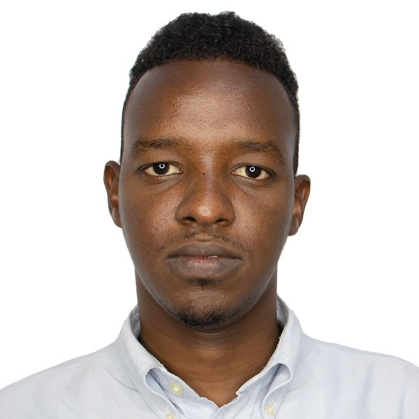

BIOGRAPHY
Omar Ali Omar
 Tell: +2526-1-5833819
Emailka: sayidcumar12@gmail.com
Location: Mogadishu, Somalia
WELCOME SECTION
PROFILE SECTION
EDUCATION SECTION
TRAINING & CERTIFICATE SECTION
SKILLS SECTION
TECHNICAL SKILLS SECTION
LANGUAGES SECTION
EMPLOYMENT HISTORY SECTION
REFRENCE SECTION
PROFILE
I have worked with a National Commission for mobilization and sensation as Heliwaa District Representative,
also I worked with Heliwaa District Administration as Operations and logistics, I have Supply chain and logistics experience.
Also I am highly motivated, able to learn new tasks quickly,
keen to achieve future professional development and proficient in growing key customer relationship.
Represent establishment with friendly, Professional demeanor at all the times.
Team player and self-motivator with superb oral and written communication skill.
MS Office proficiency and tracking software-familiarity.
Willing to work with and learn new equipment and process flexibility in work hours.
Decisive Logistics Manager with talent for negotiating and implementing cost-saving measures while maintaining quality.
Adapts quickly to changing needs of fast-paced and growing organizations.
EDUCATION
- Oct 2020 to March 2021: MBA in Supply Chain and Logistics Management, Lincoln University Collage Malaysia.
- Sep 2014 to Aug 2018: B.Sc. Electrical Engineering, Hormuud University, Mogadishu, Somalia.
- Aug 2011 to June 2014: Secondary School Leaving Certificate, Ablaal Secondary School Mogadishu, Somalia.
Training & Certifications
- Nov 2018 Somalia Stabilization Consultation Workshop Focused on “Community Recovery, Law and Reconciliation, Good Governance and Local Governance” at Benadir Regional Administration (BRA). Mogadishu, Somalia.
- October 2018 Meeting Skills Training at Benadir Regional Administration (BRA), Mogadishu, Somalia.
- August 2018 Certificate Leadership Skills Development training for African Union Mission in Somalia, (AMISOM) Mogadishu, Somalia.
- July 2018 Benadir Sewage Program at Benadir Regional Administration (BRA), Mogadishu, Somalia.
- December 2016 Leadership Management Workshop. Kulan Management University, Mogadishu, Somalia.
- Feb 2022 Procurement and logistics certificate Disaster ready.
- March 2022 E-procurement learning (Self-Paced).
- March 2022 Indicators for an inclusive green economy Advanced Course.
- March 2022 Introduction to Sustainable Finance.
- March 2022 the UN Sustainable Development Cooperation Framework.
- April 2022 Supply Chain and Logistics (Parcel Trainings), African Academy for Professionals.
SKILLS
- Generates and remains up to date on a list of preferred suppliers; orders and prepares contracts, procures items from local suppliers or elsewhere as appropriate
- Responsible for procurement and management of office supplies such as stationary, cleaning material and catering supplies.
- Keeps clear and well-documented files and well-organized archives on operations:
ledgers, requisition orders, release orders, stock /Bin cards, stock reports, loss adjustment reports, physical inventory. - Receives inventory and provides timely, accurate stock and inventory reports including, equipment tracking reports for management information and donor reporting purposes.
- Manages relationship with venders, suppliers and contractors to facilitate flow of services.
- Maintains all office buildings and provision of utilities, highlights facilities and maintenance needs and coordinates with services providers.
- Ability to multi-task and prioritize effectively.
- Outstanding analytical problem solving and troubleshooting ability.
- Team player and self-motivator with superb oral and written communication skill.
- MS Office proficiency and tracking software-familiarity.
- Willing to work with and learn new equipment and process flexibility in work hours.
TECHNICAL SKILLS
- MS Dynamics (ERP)
- Tableau (ERP)
- NI Multisim
- AutoCAD
- Adop Photoshop
- Visual Studio
- Adop Illustilator
- IBM SPSS Statistics
- MS Power BI (ERP)
LANGUAGES
SomaliArabic
English
EMPLOYMENT HISTORY
Aug 2019 to Dec 2021: Representative of National Commission for mobilization and sensation at Heliwaa District, Mogadishu, Somalia
Key responsibilities
- Support the collection and documentation of impact and success stories on monthly, quarterly, semiannual and annually.
- Documentation of evidence based impact stories.
- Mobilize and facilitate active participation of children and their communities to participate in planning,
monitoring and implementation and evaluation of community development initiatives. - Build the capacity of children, families and community to collectively engage local leaders on identified issues
and Work with local leaders to protection children from child violations and abuses on child protection. - Follow-up on commitments by leaders on improvement of the wellbeing of children and Sensitization of children on child protection.
- Support communities to identify income generation opportunities that are environmental friendly.
- In collaboration with District Land and Natural Resources Management Department support
capacity building of communities on formulation and implementation of environmental conservation by-laws. - Support development of integrated monitoring plan in assigned area with area stakeholders
- Monitor the wellbeing and child abuse cases and report any accordance in line with child protection policy and guidelines.
- Sensitize children, guardians/parents and other stakeholders about children’s rights and responsibilities with a view to identify child violations.
Dec 2018 to July 2019: Operations and Logistics at Heliwaa District, Mogadishu, Somalia
Key responsibilities
- Responsible for building the strategic delivery model.
- Responsible for putting together and leading third-party partnerships to augment internal logistics capacity.
- Responsible for directing, training, and workforce management for the logistics department.
- Responsible for the analysis of complex problem cases, as well as develop actions or recommendations to assure sustainable elimination and avoidance.
March 2018- Nov 2018 Special Secretary of Heliwaa District Commissioner, Mogadishu, Somalia.
Key responsibilities
- Liaising with the Chair to plan meetings.
- Receiving agenda items from committee members.
- Circulating agendas and reports.
- Taking minutes.
- Circulating approved minutes.
- Keeping up-to-date contact details (i.e. names, addresses and telephone numbers) for the management committee.
- Keeping a record of the organization’s activities
- Checking quorum is present at meetings
- Preparing a report of the organization’s activities for the year, for the Annual General Meeting.
Jun 2017 to Feb 2018 Office Assistant of the Deputy Social Affairs Heliwaa District. Mogadishu, Somalia.
Key responsibilities
- Sorting and labeling.
- Bookkeeping.
- Bookkeeping.
- Administrative support.
- Scheduling.
- Conference planning.
- Office management.
- Office administration.
- Team Bonding.
- Technical Support.
Aug to Nov 2011: Emergency Assistance Officer at DRC Hiran region Belet-weine, Somalia.
Key responsibilities
- Administrative and technical support.
- Carry out basic tasks within sector area, including beneficiary identification, distribution of relief assistance
(either cash or in-kind), needs assessments and other sector-specific evaluations. - Carry out administrative tasks, including preparation of PRs, POs, service contracts, financial reconciliation and tracking of outputs.
- Ensure timely reporting of outputs and escalation of issues faced during program implementation.
- Follow given work plans and guidelines.
- Provides administrative or technical support with the implementation of emergency activities in the area as well as other programs, ,
where needed and relevant. - Assist the sector officer in ensuring compliance with DRC and donor processes, quality of the planning,
implementation and follow up of emergency activities in line with sector guidelines and standard operating procedures - Perform other tasks and duties as required by the line Manager.
- Support and help other DRC sectors if needed on daily activities.
1 Aug to 1 Sep-2017: Hybrid-Power System, Industrial Internship at Hormuud Telecom Somalia, Mogadishu, Somalia.
9 July to 20 Aug-2016: Power Generation (Generator + Solar), Transmission and Distribution, Industrial Internship at Benadir Electric Company (BECO). Mogadishu, Somalia.
REFERENCES
- Name: Yusuf Dirie Mohamud
Title: Commissioner of National Commission for mobilization and sensation of Somalia.
Email: guddiqaran@gmail.com
Tell: 00252 615 567910 / 00252 612587538 - Name: Abdimahad Abshir Arale
Title: Vice President at Hormuud University
Email: Abdimahadarale@gmail.com/ Arale@hu.edu.so
Tell: 00252 615 777321 - Name: Abdirahman Ali Asir
Section Manager at Hormuud Telecom Somalia
Email: Caseyr@hormuud.com /asery201@gmail.com
Tell: 00252 615 099993